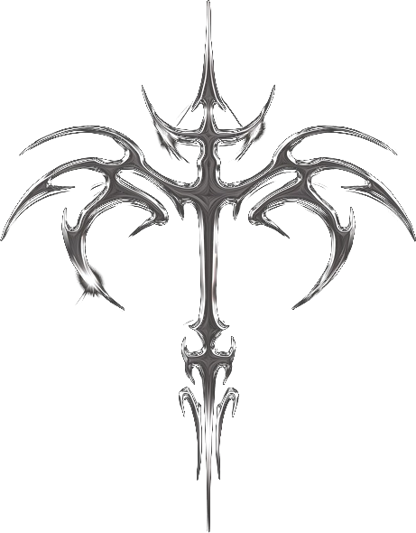

Стало
Флагман-сайт 🚀
Живой брендовый сайт: каталог из 33 релизов с плеером, приём демо в Telegram, анимации, защита и деплой.

Начинали с обычного текста в переписке — пришли к интерактивному сайту с реальным каталогом, плеером, формой заявок в Telegram и продом на Vercel. Вот как это выглядело по шагам.
Текстовый питч в переписке. Никакого сайта, визуала и присутствия. Всё на словах.
Живой брендовый сайт: каталог из 33 релизов с плеером, приём демо в Telegram, анимации, защита и деплой.
INTERIA! © 2026 · сделано с нуля